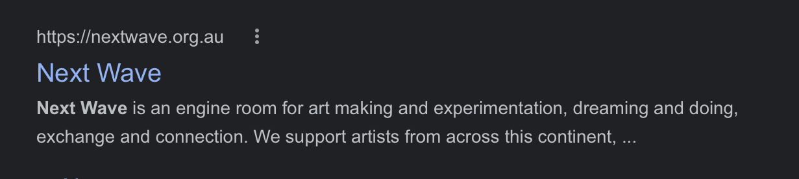

My chosen interactive experience is Next Wave Festival
W2 Questions
Q1: Spend 2 minutes with the experience and list all of your actions in granular detail
Q2: What was the first thing you paid attention to when interating with the experience?
•Answer
Q3: What did you spend the most time engaging with?
•Answer
Q4: What was the most common action in your two minute interaction with the experience?
•Answer
Q5: What is your impression of the intended primary goal of the interactive experience?
•Answer
Q6: How does the experience communicate it's primary goal?
• Answer
Q7: What is your impression of the intene length of a single interaction and how often you are intended to interact with the experience?
•Answer
W3 Questions
Q8: What metaphor or metaphors does the experiences mental model referance?
•Answer
Q9: What does this reference suggest about how you should feel and/or act when engaging with it?
•Answer
Q10: What is the most frustrating element of the interaction and what makes it frustrating to you?
•Answer
Q11: What is the most satisfying element of thhe interaction and what mkes it satisfying to you?
•Answer